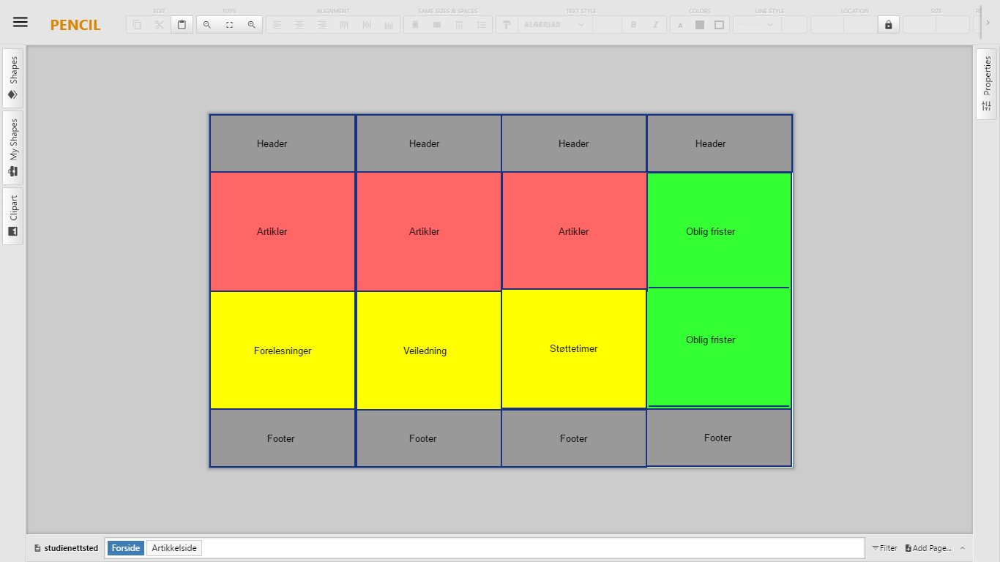
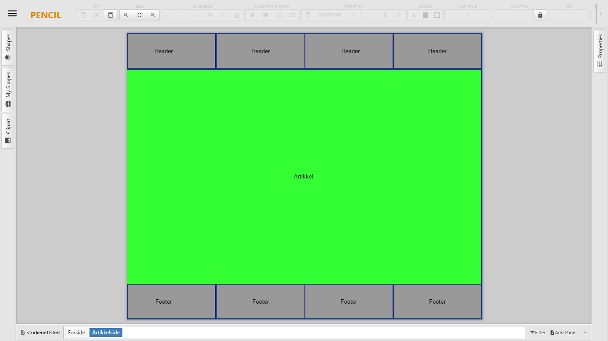

Om denne siden
Jeg startet med å planlegge nettstedet onsdag 27.09 etter å ha blitt ferdig med oblig 2 i INFPROG dagen før. Når jeg begynte med planleggingen hadde jeg ikke noen ideer om hvordan jeg skulle løse oppgavene. Det ble derfor 3 lange timer med mye frustasjon. Jeg hadde ikke kommet meg et skritt videre om ikke min fetter hadde hjulpet meg igang med prosjektet. Han kom med flere forslag på hvordan oppgaven kunne løses, men han kunne ikke hjelpe meg med CSS Grid siden han ikke brukte systemet ennå. Grunndesignet som jeg valgte å gå for til slutt er basert på noen forslag han kom med og som ble endret til å passe mine behov. Jeg har slitt veldig med å få CSS Grid til å fungere i praksis. Etter mange frustrerende timer og mange meldinger på FB-gruppen til kurset fikk jeg systemet til å fungere.
Selve designet er delvis basert på ideer jeg fikk ifra min fetter og på tidligere oppgaver jeg har hatt i Grit. Menyen i header er et eksempel på dette. Faget webutvikling krever en abstrakt tankegang for å få til et design, så det lå ikke mye tanker rundt hvor jeg plasserte elementene. Jeg tenkte mer på å få til oppgavene for å få bestått. Noen tanker har jeg likevel hatt, som f.eks. at teksten stort sett er justert mot venstre og luft i mellom kodeeksemplene i Math ML. Dette var for å øke lesbarheten og skape et tydligere skille mellom hvert eksempel. Designet på forsiden er hentet ut ifra forelesningene der vi lærte om CSS Grid.
Den siste uken før innlevering var jeg såpass effektiv at jeg fikk til minstekravene til oblig 2. Dette var en lettelse etter en del fortvilte timer der jeg hadde mest lyst til å gi opp alt sammen. Her fikk jeg skrevet artiklene og hentet inspirasjon ifra flere sider for enkle, men funksjonelle designelementer.